IA 342: Visualization Methods, Technologies, and Tools for Intelligence Analysis
Lab 6 — Clean Data in Tableau Flow
IA342 · Dr. Wei
Deadline: the date and time announced for Lab 6. Publish your work in fall2026 before the deadline. There is no Canvas submission.
Objectives
Become familiar with Tableau Flow, and learn how to clean and visualize house-price data in Tableau.
Required published items
| Session | Item type | Published name |
|---|---|---|
| Monday | Diamonds Flow | firstname_lastname_lab6_diamonds_flow |
| Monday | Diamonds Data Source | firstname_lastname_lab6_diamonds_clean |
| Wednesday | House Flow | firstname_lastname_lab6_house |
| Wednesday | House Data Source | firstname_lastname_lab6_house |
| Wednesday | House Workbook | firstname_lastname_lab6_house |
Five published items: two Flows, two Data Sources, and one Workbook. The house Workbook contains three Worksheets and one Dashboard; they are not additional standalone submissions.
Use your own name, Lab 6, and the fall2026 project for publishing. Follow the names above rather than copying a demonstration name or project shown in a screenshot.
Monday — In-class Diamonds exercise
Complete the in-class exercise in the lecture. Keep both the published Flow and the clean Data Source generated by running it. No Diamonds Workbook is required.
Inputs on GitHub: Batch A — 10 rows · Batch B — 12 rows. Use Download raw file on the file page.
Check the Diamonds output: 22 input rows → 20 after duplicate removal → 18 after missing-price removal → 17 after the weight filter. The final counts are GIA 6, IGI 5, HRD 6. Keep IDs 7, 154, and 155.
Wednesday — Clean and visualize house data
Data: Download the House Price Excel file. On GitHub, use Download raw file.
1. Create a new flow
Create a new Flow in the fall2026 course project in Tableau Cloud. Do not overwrite the Diamonds flow.
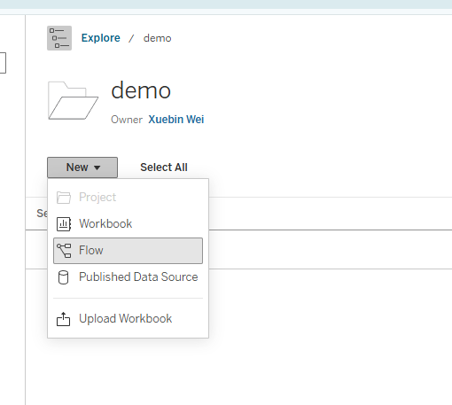
2. Connect to the house data
Click Connect to Data and upload the House Price Excel file. Select the house_url table.
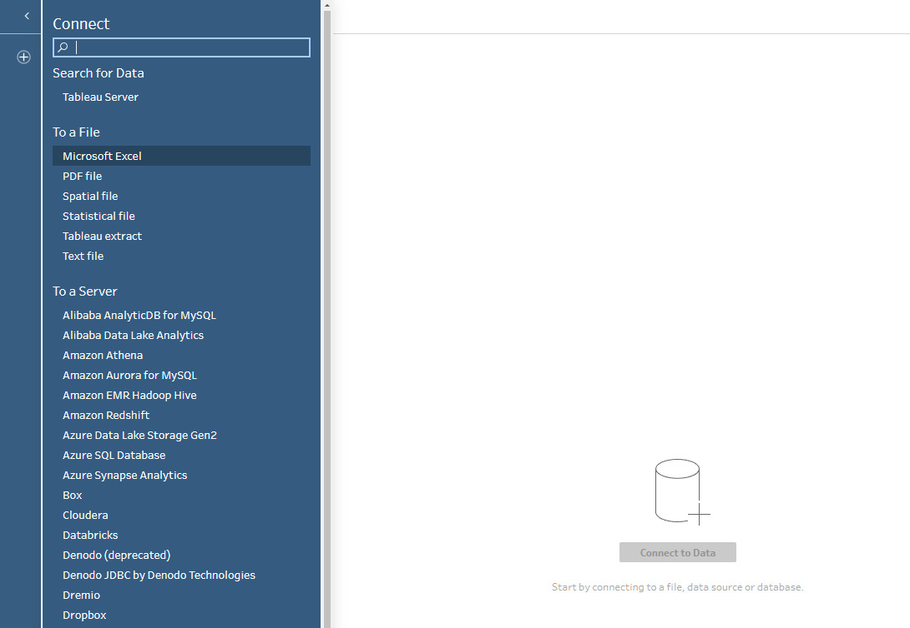
3. Keep the required fields
In Field List, remove the other fields and retain only ID, price, bedroom, bathroom, house_type, status, lot_size, built_in, zip, and area.
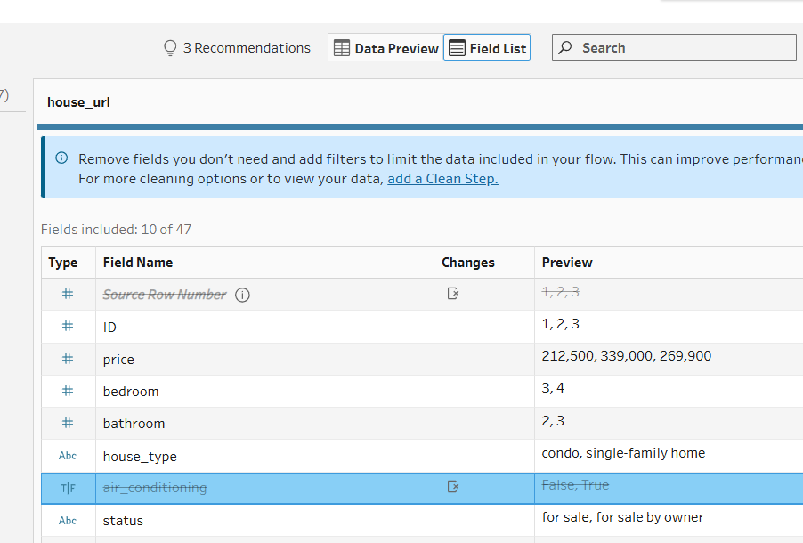
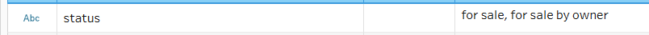
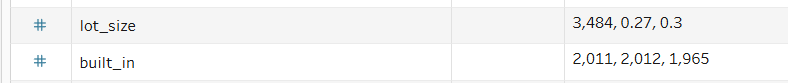
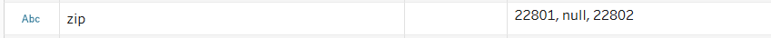
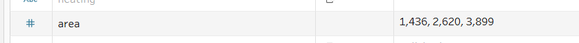
4. Add a Clean step
Add a Clean step after the input.
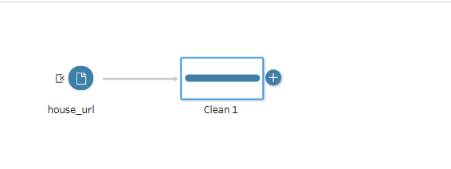
5. Set ID to String
In the Clean step, change the data type of ID to String.
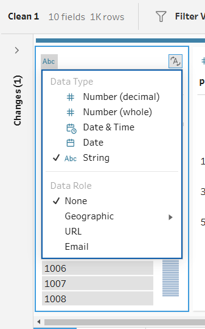
6. Set built_in to Date
Change the data type of built_in to Date.
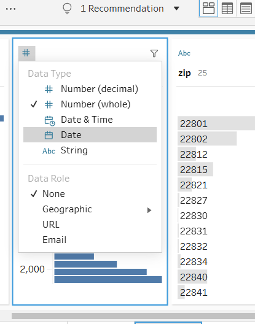
7. Set the ZIP Code role
For zip, select Geographic → ZIP Code/Postcode. Keep the postal-code values as text; ZIP Code is a geographic role, not a quantity.
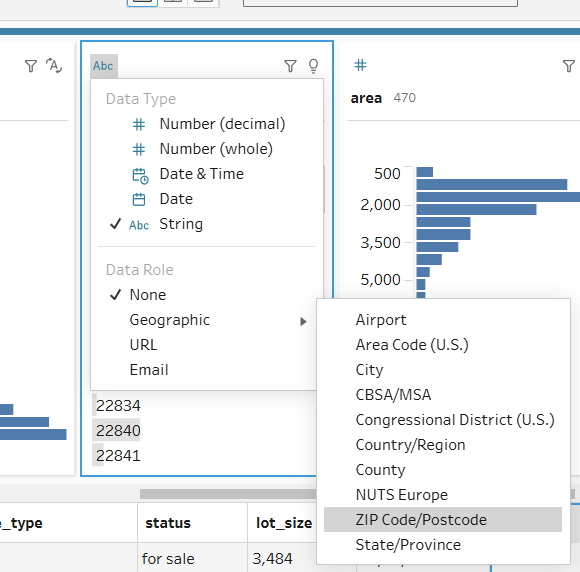
8. Group status values
Click the three dots in the status field and choose Group Values → Pronunciation. Review the suggested groups.
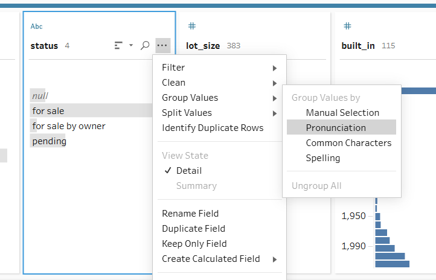
9. Remove null values
Select null in the area field and choose Exclude. Repeat for the other retained fields until no null values remain.
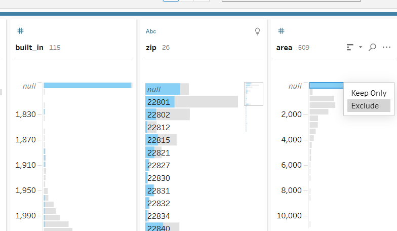
10. Calculate unit price
Create a calculated field named unit price, using:
[price] / [area]
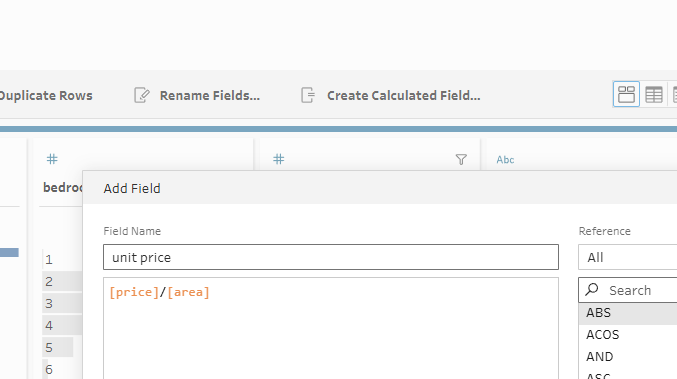
11. Calculate lot size in square feet
Create a second calculated field named lot size sq, using:
IF [lot_size] < 10 THEN [lot_size] * 43560
ELSE [lot_size]
END
For this exercise, the formula treats values below 10 as acres and the remaining values as square feet. This is a dataset-specific assumption, not a general way to identify units.
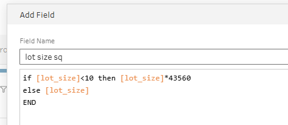
12. Add the output Data Source
Add an Output step. Set Save output to to Published data source, select fall2026, and name the Data Source firstname_lastname_lab6_house.

13. Publish the Flow
Publish your Flow in fall2026 as firstname_lastname_lab6_house. The Flow and its Data Source are different item types and may use the same name.
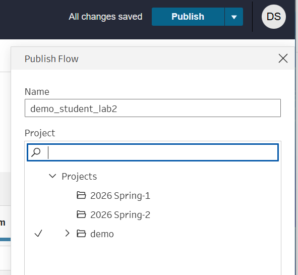
14. Run the Flow and create a Workbook
Run the Flow. When the generated Data Source appears in the course project, select it and choose New Workbook. Build the Workbook from your own Flow’s output, not directly from the raw Excel file.
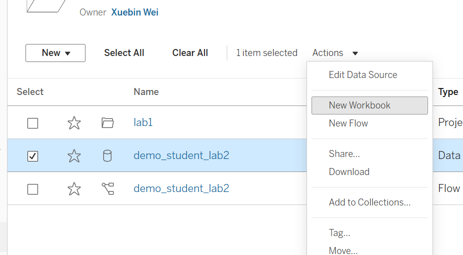
15. Create the year-built line chart
Drag built_in to Columns and Migrated Data (Count) to Rows. In Show Me, select the continuous line chart.
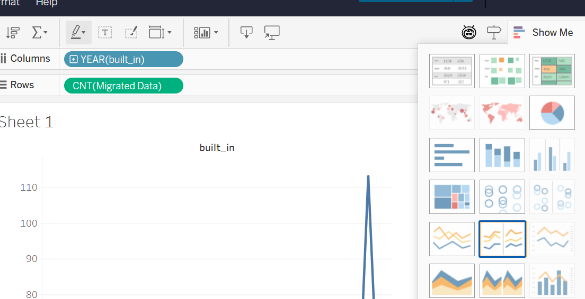
16. Show the last 30 years
Drag built_in to Filters. Select Relative dates, choose Years, and set Last 30 years.
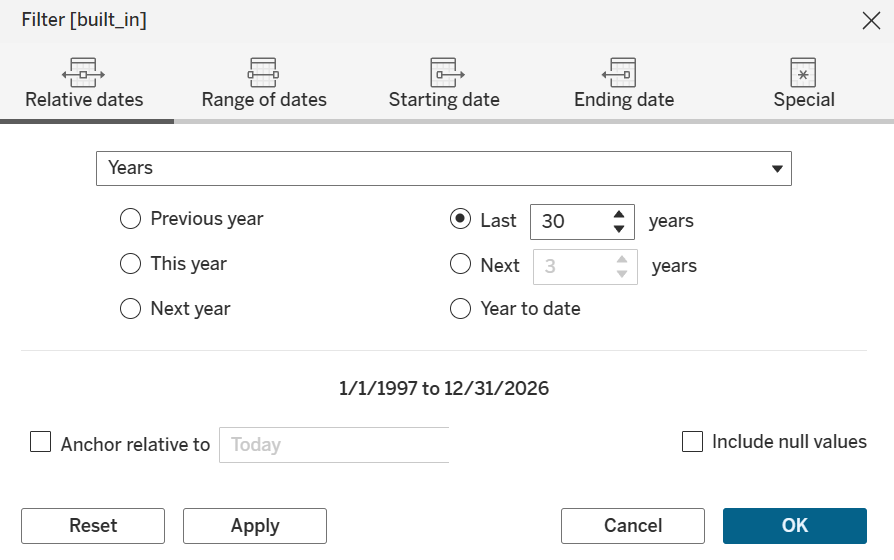
17. Create the lot-size bar chart
Create a second Worksheet showing average lot size in square feet for each house type. Use house_type and AVG(lot size sq).
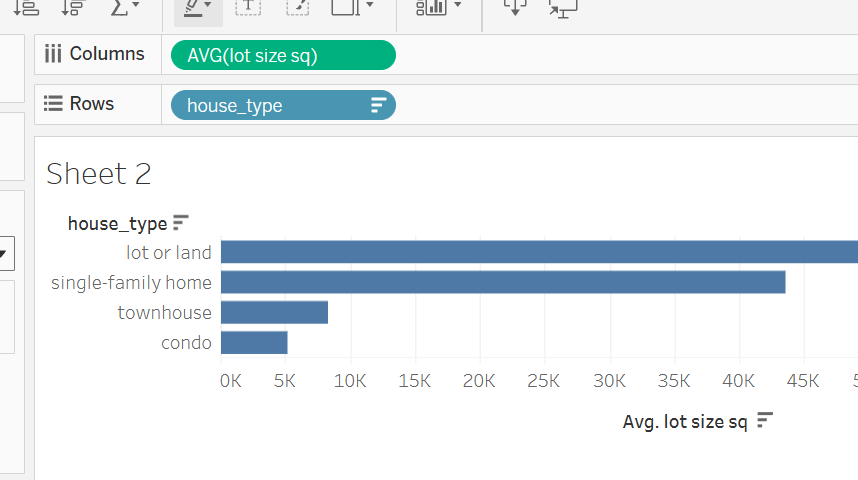
18. Create the unit-price symbol map
Create a third Worksheet. Select zip and unit price, then choose Symbol Map in Show Me. Change the aggregation to AVG(unit price).
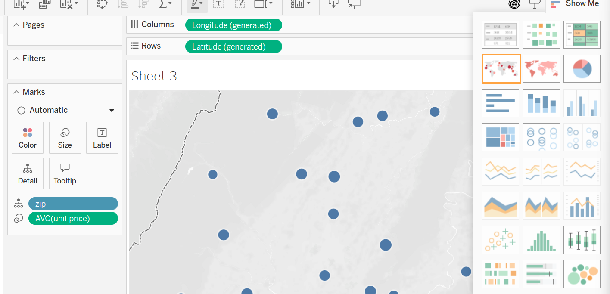
19. Change the background map
In the Map menu, change Background Maps to Streets.
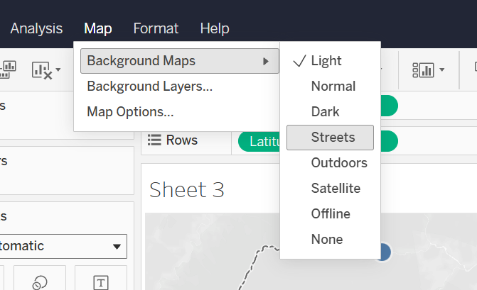
20. Build the Dashboard
Create a Dashboard, add all three Worksheets, and enable the bar chart as a filter.
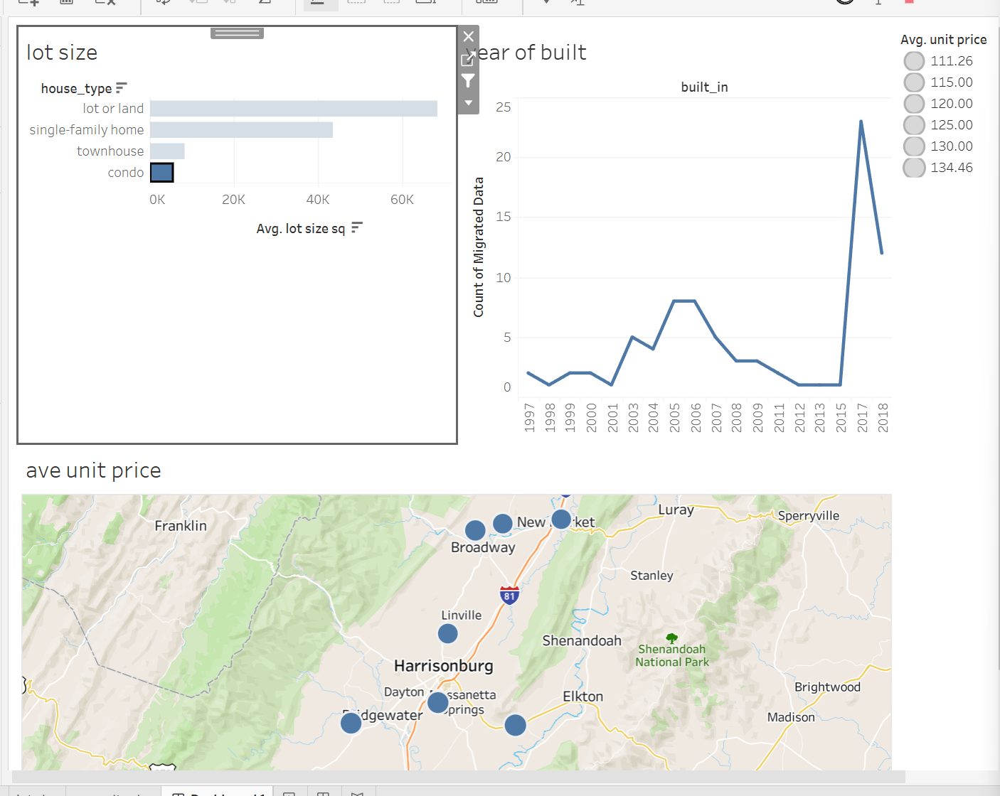
21. Publish the Workbook
Publish the Workbook in fall2026 as firstname_lastname_lab6_house. Include the three Worksheets and the Dashboard.
Use lab6 in the name—not lab5.

Submission
Publish both Flows, both Data Sources, and the house Workbook in fall2026 before the deadline. A saved draft is not a published Flow; running the Flow generates its output Data Source.
The house Workbook must connect to your house Flow’s published Data Source, and it must contain the line chart, bar chart, symbol map, and Dashboard described above.
Your final submission time is determined by the Last Modified time on Tableau Cloud. If it is after the lab deadline, late penalties apply according to the course syllabus. There is nothing to upload or submit on Canvas.
Rubric — 100 points
| Required item | Points | Full-credit requirements |
|---|---|---|
| Diamonds Flow | 20 | Published and runnable, with both inputs and the lecture’s cleaning operations. |
| Diamonds Data Source | 10 | Published output of the Diamonds Flow; contains the required 17 records and calculated fields. |
| House Flow | 30 | Published and runnable; retains the ten required fields, applies the specified types/roles, grouping and null removal, and creates unit price and lot size sq. |
| House Data Source | 10 | Published output generated by the House Flow; available in fall2026 with the required fields and both calculations. |
| House Workbook | 30 | Uses the student’s House Data Source; includes all three specified Worksheets and a Dashboard with the bar chart enabled as a filter. |
| Total | 100 | 2 Flows + 2 Data Sources + 1 Workbook |
Each criterion has PASS = full points and MISSING = 0. The instructor may enter an intermediate score when an item is present but incomplete. Late penalties are applied according to the syllabus.
| Return to Course Home | Go to Module 6 Lecture |